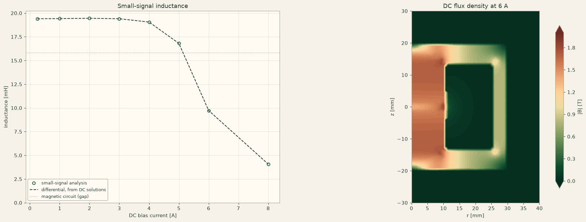
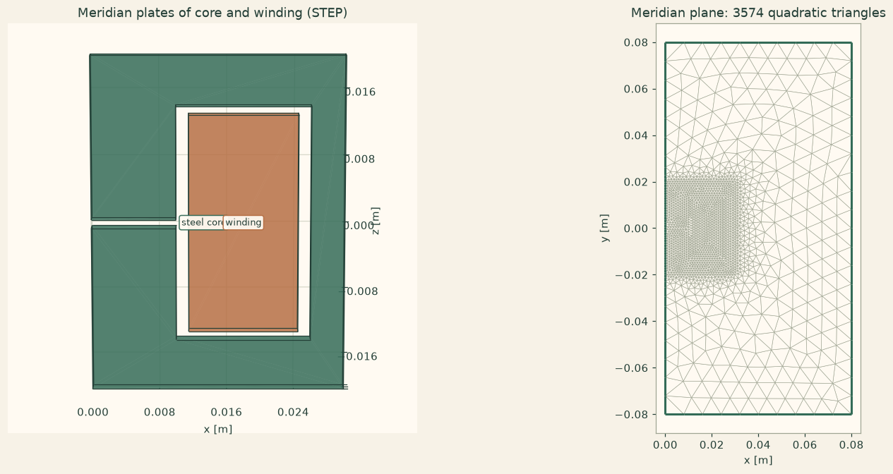

Docs › Examples › Small-signal inductance of an inductor with a nonlinear core
Low-frequency electromagnetics, inductors · 2D-axisymmetric
Small-signal inductance of an inductor with a nonlinear core
A pot-core inductor with a gapped steel core and 200 turns carries a direct bias current from 0.25 to 8 A plus a small alternating current.
Run locally with OneSimulation. The example downloads are free. Running them requires an activated runtime. Runtime Alpha 0.2.1a7 · CPython 3.13 on macOS (Apple Silicon), Ubuntu 22.04 (x86-64), and Windows x64. Installation and activation · View pilot plans. Scope of the reference checks.

What it computes
OneSimulation solves the nonlinear magnetostatic field of the bias current on the meridian plane cut from STEP plates, then the harmonic field of a small current with the differential reluctivity of every point (EddyCurrents with DCOperatingPoint); coil_impedance gives the small-signal inductance. The script that builds the STEP files comes with the notebook.
What it checks
The small-signal inductance agrees with the differential inductance from pairs of DC solutions to 1e-4 at every bias; at low bias it is 19.41 mH, 23 % above the magnetic-circuit estimate of the gap alone (15.79 mH) because of fringing, and it falls to 21 % of that value at 8 A as the core saturates.
Geometry
The notebook starts at the import of the CAD files inductor_small_signal_axisymmetric.step, inductor_small_signal_axisymmetric_core.step, inductor_small_signal_axisymmetric_winding.step: STEP (AP242), readable by any CAD program, with the names of the faces that the boundary conditions use. Put them next to the notebook.

The geometry script
The script inductor_small_signal_axisymmetric_geometry.py builds the geometry with the CAD objects of OneSimulation and writes the files. Change a dimension there, run it, and run the notebook again.
"""Geometry of the OneSimulation example "Small-signal inductance of an inductor with a nonlinear core".
Builds with the CAD objects of OneSimulation the meridian half plane (x = r >= 0, z) of a pot-core
inductor as thin plates: the air region, 80 mm from the axis and 160 mm along it
(inductor_small_signal_axisymmetric.step; x_min is the axis); the steel pot core, 30 mm in radius and
40 mm high, with a winding window from r = 10 to 26 mm, |z| <= 14 mm, and an air gap of 1 mm in its
centre post (inductor_small_signal_axisymmetric_core.step); and the winding in the window
(inductor_small_signal_axisymmetric_winding.step).
"""
from onesim.cad.d3 import Box
t = 0.002
plate = lambda r0, r1, z0, z1: Box(
length=r1 - r0, width=t, height=z1 - z0, origin=(r0, -t / 2, z0)
)
plate(0.0, 0.08, -0.08, 0.08).save("inductor_small_signal_axisymmetric.step")
(
plate(0.0, 0.03, -0.02, 0.02)
- plate(0.010, 0.026, -0.014, 0.014)
- plate(-0.001, 0.0105, -0.0005, 0.0005)
).save("inductor_small_signal_axisymmetric_core.step")
plate(0.0115, 0.0245, -0.013, 0.013).save(
"inductor_small_signal_axisymmetric_winding.step"
)The notebook
The complete notebook, cell by cell. Run it to produce the figures and the comparison printout.
An inductor in a power converter carries a large direct current with a small ripple on top. The ripple sees the small-signal (incremental) inductance \(L_\mathrm{ss}=\mathrm d\Psi/\mathrm dI\) at the operating point, which falls as the steel saturates. The inductor here is a pot core of steel (radius 30 mm, height 40 mm) with a 1 mm air gap in its centre post and a winding of \(N=200\) turns in the window; the steel follows a measured \(B\)-\(H\) curve.
Everything is symmetric about the axis. OneSimulation first solves the nonlinear magnetostatic field of the bias current; EddyCurrents with a DCOperatingPoint then solves the harmonic field of a small current using the differential reluctivity \(\mathrm dH/\mathrm dB\) of every point, and coil_impedance returns \(j\omega L_\mathrm{ss}\).
| boundary | condition |
|---|---|
| axis and outer walls of the air region | magnetic insulation, \(A_\varphi=0\) |
| region | material |
|---|---|
| core | steel, \(B\)-\(H\) curve below |
| winding, air | \(\mu_0\) |
The air region comes from inductor_small_signal_axisymmetric.step, the core and the winding from inductor_small_signal_axisymmetric_core.step and ..._winding.step; the script inductor_small_signal_axisymmetric_geometry.py builds them with the CAD objects of OneSimulation.
Reference. (i) The differential inductance from two DC solutions at \(I\pm\Delta I\), \(L_\mathrm{diff}=(\Psi(I+\Delta I)-\Psi(I-\Delta I))/2\Delta I\), with the flux linkage of the winding; the small-signal analysis must reproduce it. (ii) At low bias the steel is far from saturation and the gap dominates: \(L\approx\mu_0N^2A_\mathrm{post}/g\) with the cross-section \(A_\mathrm{post}\) of the centre post (magnetic circuit, fringing neglected; Kazimierczuk, High-Frequency Magnetic Components, 2nd ed., ch. 2).
import numpy as np
from onesim.cad.exchange import load
from onesim.materials import VacuumPermeability
from onesim.meshing import TriangularMesher
from onesim.numerics import Numerics
from onesim.numerics.fem import FiniteElement, Lagrange, RevolvedH1SpaceFactory
from onesim.numerics.linear import ComplexSparseDirect, SparseDirect
from onesim.numerics.nonlinear import DampedNewton
from onesim.physics.magnetostatics import (
BHCurve,
Coil,
DCOperatingPoint,
EddyCurrents,
MagneticInsulation,
Magnetostatics,
RegionCurrent,
coil_impedance,
flux_linkage,
)
from onesim.simulation import Problem, Simulation
from onesim.visualization import plots, theme
theme.set()Geometry and mesh
section with the plane \(y=0\) gives the meridian plane (\(x=r\)). Quadratic triangles of 1 mm in the core and the winding, 0.25 mm in the gap region, growing to 8 mm outside.
plates = {
name: load(f"inductor_small_signal_axisymmetric{suffix}.step")
for name, suffix in (("air", ""), ("core", "_core"), ("winding", "_winding"))
}
meridian = plates["air"].section((0, 1, 0))
core, winding = plates["core"].section((0, 1, 0)).named("core"), plates[
"winding"
].section((0, 1, 0)).named("winding")
mesh = TriangularMesher(
target_size=0.008,
embedded_regions=(core, winding),
region_sizes={"core": 0.001, "winding": 0.001},
grading=0.25,
).generate(meridian)
fig = plots.figure(1, 2, size=(14, 6))
plots.geometry(
[plates["core"].named("steel core"), plates["winding"].named("winding")],
camera=plots.Camera(elevation=10, azimuth=-90),
title="Meridian plates of core and winding (STEP)",
ax=fig[0],
)
plots.mesh(
mesh,
groups=("all",),
legend=False,
title=f"Meridian plane: {mesh.cell_count} quadratic triangles",
ax=fig[1],
)
plots.show()Models
linkage solves the nonlinear DC field of a winding current and returns the flux linkage; small_signal solves the harmonic field of 1 mA at 1 kHz around a DC bias and returns \(L_\mathrm{ss}=\mathrm{Im}\,Z/\omega\).
turns, frequency, area = 200, 1e3, winding.measure
steel = BHCurve(
flux_density=(0.5, 1.0, 1.3, 1.5, 1.6, 1.7, 1.8, 2.0),
field_strength=(80, 150, 300, 700, 1500, 3500, 8000, 40000),
region="core",
)
numerics = lambda solver: Numerics(
spatial=FiniteElement(
element=Lagrange(order=2), quadrature_order=4, provider=RevolvedH1SpaceFactory()
),
linear_solver=solver,
**(
{
"nonlinear_solver": DampedNewton(
linear_solver=solver, relative_tolerance=1e-10, absolute_tolerance=1e-14
)
}
if isinstance(solver, SparseDirect)
else {}
)
)
source = lambda current: (
RegionCurrent.coil(winding, turns=turns, current=current, cross_section=area),
)
insulated = lambda m: (MagneticInsulation(boundary=meridian.boundaries.all, physics=m),)
linkage = lambda current: (
lambda m: flux_linkage(
Simulation(
problem=Problem(
name="DC field",
geometry=meridian,
physics=(m,),
boundary_conditions=insulated(m),
),
mesh=mesh,
numerics=numerics(SparseDirect()),
).solve_stationary(),
m,
m.current_sources[0],
)
)(
Magnetostatics(
domain=meridian.domain(),
permeability=VacuumPermeability(),
current_sources=source(current),
magnetic_response=steel,
)
)
small_signal = lambda bias: (
lambda coil: (
lambda m: coil_impedance(
Simulation(
problem=Problem(
name="Small signal",
geometry=meridian,
physics=(m,),
boundary_conditions=insulated(m),
),
mesh=mesh,
numerics=numerics(ComplexSparseDirect()),
).solve_stationary(),
m,
coil,
).imag
/ (2 * np.pi * frequency)
)(
EddyCurrents(
domain=meridian.domain(),
permeability=VacuumPermeability(),
frequency=frequency,
coils=(coil,),
magnetic_response=steel,
operating_point=DCOperatingPoint(source(bias)),
)
)
)(Coil(winding, turns=turns, current=1e-3))
biases, delta = np.array((0.25, 1.0, 2.0, 3.0, 4.0, 5.0, 6.0, 8.0)), 0.02
differential = np.array(
[(linkage(i + delta) - linkage(i - delta)) / (2 * delta) for i in biases]
)
incremental = np.array([small_signal(i) for i in biases])Results
The small-signal inductance against the differential inductance of the DC field, and the low-bias value against the magnetic circuit.
post = np.pi * 0.010**2
circuit = float(VacuumPermeability().evaluate()) * turns**2 * post / 0.001
print("bias [A] L small-signal [mH] L differential [mH] relative difference")
for i, ss, dd in zip(biases, incremental, differential):
print(f"{i:8.2f} {1e3 * ss:19.4f} {1e3 * dd:21.4f} {ss / dd - 1:+20.1e}")
print(
f"magnetic circuit, gap only: {1e3 * circuit:.3f} mH; small-signal inductance at 0.25 A: {1e3 * incremental[0]:.3f} mH "
f"({incremental[0] / circuit - 1:+.1%}, fringing at the gap raises it)"
)
print(
f"saturation: the inductance falls to {incremental[-1] / incremental[0]:.1%} of its low-bias value at {biases[-1]:.0f} A"
)Figure
Left: the inductance against the bias current. Right: the DC flux density in the meridian plane at 6 A, where the centre post saturates.
field = (
lambda m: Simulation(
problem=Problem(
name="DC field",
geometry=meridian,
physics=(m,),
boundary_conditions=insulated(m),
),
mesh=mesh,
numerics=numerics(SparseDirect()),
)
.solve_stationary()
.field(m.magnetic_flux_density)
)(
Magnetostatics(
domain=meridian.domain(),
permeability=VacuumPermeability(),
current_sources=source(6.0),
magnetic_response=steel,
)
)
r, z = np.asarray(mesh.coordinates).T
inside = (r < 0.04) & (np.abs(z) < 0.03)
values = np.linalg.norm(np.abs(field.evaluate(np.column_stack((r, z)))), axis=1)
fig = plots.figure(1, 2, size=(16, 6))
plots.line(
points={"small-signal analysis": (biases, 1e3 * incremental)},
reference={"differential, from DC solutions": (biases, 1e3 * differential)},
hlines={"magnetic circuit (gap)": 1e3 * circuit},
ylimits=(0, None),
xlabel="DC bias current [A]",
ylabel="inductance [mH]",
title="Small-signal inductance",
legend="lower left",
ax=fig[0],
)
plots.heatmap(
1e3 * r,
1e3 * z,
values,
triangles=np.asarray(mesh.cells),
limits=(0, 2.0),
label="|B| [T]",
xlimits=(0, 40),
ylimits=(-30, 30),
xlabel="r [mm]",
ylabel="z [mm]",
title="DC flux density at 6 A",
ax=fig[1],
)
plots.show()Going further
Widen the gap in inductor_small_signal_axisymmetric_geometry.py: the inductance drops, but it holds up to a higher current. Give the core a conductivity in EddyCurrents to see the eddy-current loss of the ripple as the real part of the impedance.